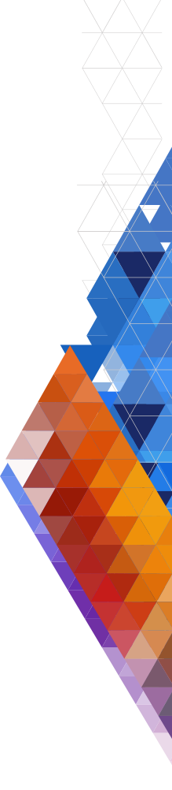

Web Design
Here are some of my websites. My favourite websites are the one with full bleed image with text over it. I think it sends a strong message, because lot of people like powerful visual cocepts, and as a designer/developer, I have to make my first time users stay on the website, that is why I like to go with a beautiful image for the landing page.
My main focus when creating a website when we talk about responsivness is to make it mobile first. Nowadays we are having more users on their phones than on their laptops, so having both options for the user is definetely a big plus, and a potential hook in getting more users.